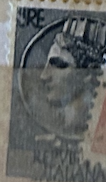
| SOURCE | TITLE| IMAGE MATCH | click to source page |
| Mercari | France 1948 10 Francs Coin | Mercari |  |
| eBay | RARE Italy Circa 1958-1966 Stamps 100 and 200 Lire | eBay | 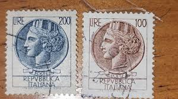 |
| vividagallery.com | Italy Turrita Siracusana Lavender Purple Portrait Definitive Stamp Jigsaw Puzzle by Vivida Gallery - Vivida Gallery | 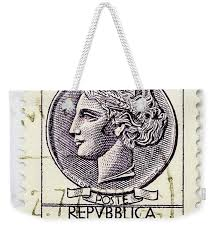 |
| Numista | 100 Francs - Descartes (type 1942) - France – Numista | 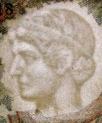 |
| Amazon.com | Amazon.com: Italy 920A-921A (Complete.Issue.) Watermark Flügelrad unmounted Mint/Never hinged ** MNH 1954 Italia (Stamps for Collectors) : Toys & Games | 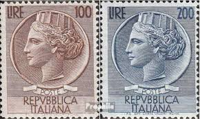 |
| Algeria and Tahiti banknotes for sale | 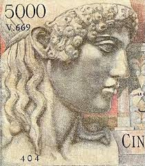 | |
| Numista | 10 000 Francs - Génie Français (type 1945) - France – Numista | 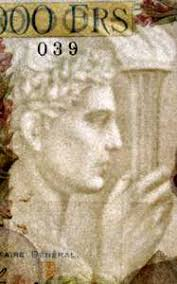 |
| eBay | Greece. 1000 Drachma 1939 - VF - Rare Greek banknote Acropole Athena - Athens | eBay | 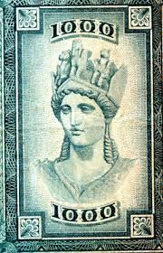 |
| eBay | Grade 64 Tunisian Paper Money for sale | eBay | 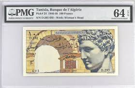 |
| eBay | POSTE ITALIANE ~ Syracusean Coin ~ 5L Gray Stamp ~ Posted/Used ~ 1953 | eBay | 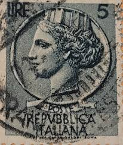 |
| Todocolección | f-ex47702 italy 1931 75c virgilio postcard to s - Buy Antique stamps of Italy on todocoleccion | 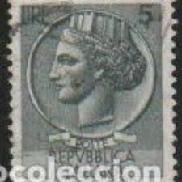 |
| nordfrim.com | Buy Greece - Notos 2021 - Mint souvenir sheet | 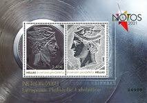 |
| seemystamps.com | See My Stamps! - A Place to Show Off Your Stamp Collection | Page 6 | 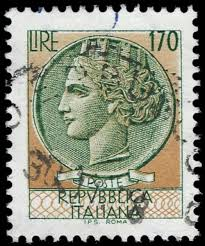 |
| Etsy | 1955 Coin of Syracuse Repvbblica Italiana 5 Lire Stamp/ Italian Stamp - Etsy | 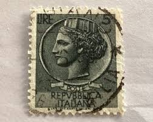 |
| eBay | Millennium Coin Collection for sale | eBay | 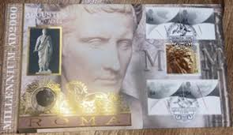 |
| eBay | Turquoise Used European Stamps for sale | eBay | 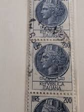 |
| eBay | GREECE 2021 STAMP ON STAMP COIN ON STAMPS ON STAMPS NOTOS S15392-5 | eBay | 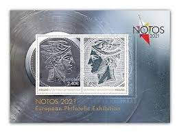 |
| Shutterstock | 3+ Hundred Drachmai Royalty-Free Images, Stock Photos & Pictures | Shutterstock | 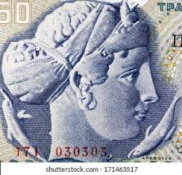 |
| eBay | GREECE 1944 LATE OCCUPATION CURRENCY 5 MILLION DRACHMA | eBay | 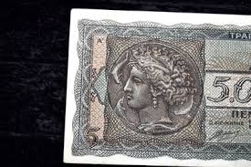 |
| What are unique Italian heritage tattoo ideas? |  | |
| eBay | Las mejores ofertas en Dracma griego en papel moneda griega | eBay | 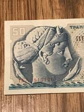 |
| eBay | 🇬🇷 Greece 20000 drachmai 1946 P-176a P-176 Banknote 081224-10 | eBay | 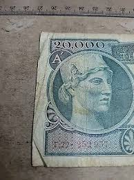 |
| vividagallery.com | Italy Turrita Siracusana Forest Green Portrait Definitive Stamp Youth T-Shirt by Vivida Gallery - Vivida Gallery |  |
| Bob Shop | Looking for 1959+crown+in+coins Buy online on Bob Shop. | 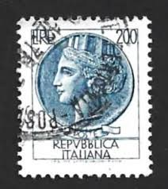 |
| eBay | FRANCE CÉRÈS N°3a NOIR sur BLANC OBLITÉRÉ ÉTOILE de POINTS | eBay | 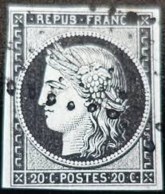 |
| Shutterstock | Italy Circa 1952 Stamp Printed Italy Stock Photo 42210799 | Shutterstock | 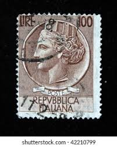 |
| Find Your Stamps Value | Value of 100 lire poste italiane italy stamps |  |
| iStock | Arethusa Stock Photo - Download Image Now - Ancient, Close-up, Females - iStock | 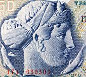 |
| HipStamp | Italy Scott 788 MNH** 200 Lire Italia stamp | Europe - Italy, General Issue Stamp / HipStamp | 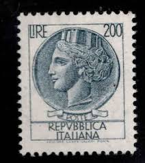 |
| Stamp Auction Network | David Feldman SA Sale - 1204 Page 9 | 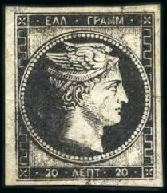 |
| eBay | Italiana 100 Lire for sale | eBay |  |
| Free stamp catalogue | Stamps - Freestampcatalogue.com - The free online stampcatalogue with over 500.000 stamps listed. | 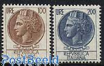 |
| Crowdfund Insider | American Express, Square To Create Credit Card For Square Sellers | Crowdfund Insider | 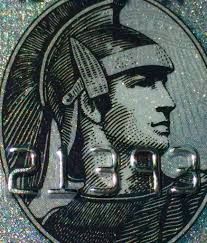 |
| BANK NOTE MUSEUM | INDIA OVERVIEW | 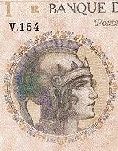 |
| iStock | Retro Postage Stamp Stock Photo - Download Image Now - Adult, Allegory Painting, Alphabet - iStock | 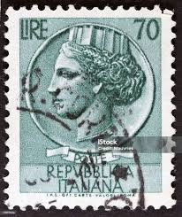 |
| RealBanknotes.com | RealBanknotes.com > Tunisia p25: 500 Francs from 1947 | 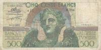 |
| pv-griekenland.nl | LHH Dies Proofs | 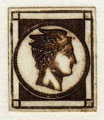 |
| suetimney.com | Sue Timney Design UK | MAYFAIR | 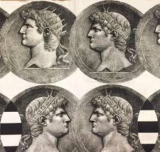 |
| iStock | Philip Ii Of Macedon Stock Photo - Download Image Now - Philip II of Spain, Greece, Adult - iStock | 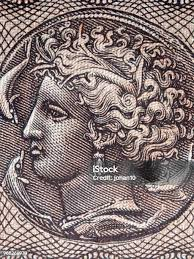 |
| vividagallery.com | Italy Turrita Siracusana Forest Green Portrait Definitive Stamp Ornament by Vivida Gallery - Vivida Gallery |  |
| eBay | Las mejores ofertas en Billetes griegos certificada | eBay | 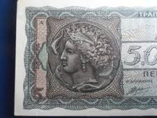 |
| vividagallery.com | Italy Turrita Siracusana Lavender Purple Portrait Definitive Stamp Throw Pillow by Vivida Gallery - Vivida Gallery | 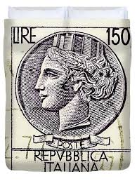 |
| vividagallery.com | Italy Turrita Siracusana Lavender Purple Portrait Definitive Stamp Zip Pouch by Vivida Gallery - Vivida Gallery | 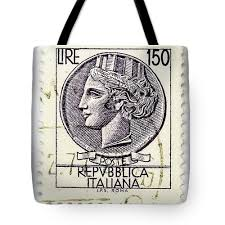 |
| Unused , but can i trust that value on this on ebay is real | 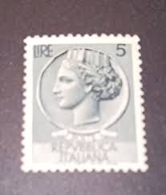 | |
| Alamy | 2 drachma coin from greece (greek money currency) with owl face, pre-euro finance business (old collectible) isolated on white background (cut out Stock Photo - Alamy | 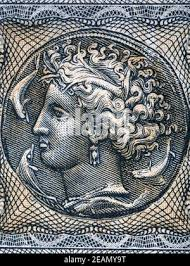 |
| The Philately | 1961 - 1970 Stamps for Sale - The Philately | 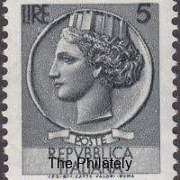 |
| Check out the crest on my new coin (mail day)! I've maybe seen one or two crest strikes this good (pretty new to this though). The test cut on the owl side is why I could afford it. If anyone knows of a die match, I'd love to learn about it. | 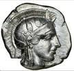 | |
| HipStamp | Italy 1955 - U - Scott #661 | Europe - Italy, General Issue Stamp / HipStamp | 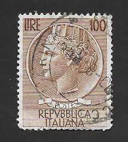 |
| Alamy | ITALY - CIRCA 1956: a stamp printed in Italy shows Amedeo Avogadro, was an Italian scientist, most noted for his contribution to molecular theory now Stock Photo - Alamy | 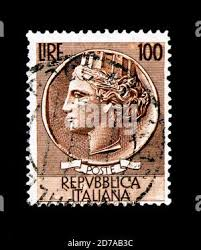 |
| vividagallery.com | Italy Turrita Siracusana Lavender Purple Portrait Definitive Stamp Poster by Vivida Gallery - Vivida Gallery | 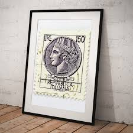 |
| Todocolección | italia yvert 869, 1962 - Buy Antique stamps of Italy on todocoleccion | 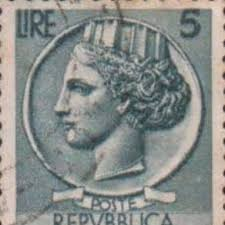 |
| eBay | Italy 150 L Mi.Nr. 1522 As Complete Perforated Sheet With 100 Stamps 1976 | eBay |  |
| eBay | Italian Stamp Collections & Mixtures for sale | Shop with Afterpay | eBay Australia | 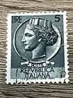 |
| Numista | Échantillon type Athéna à droite - 20 Francs Debussy - France – Numista | 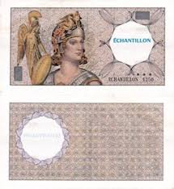 |
| iStock | Italy Postage Stamp Turrita Serie 5 Lire Stock Photo - Download Image Now - Adult, Allegory Painting, Alphabet - iStock | 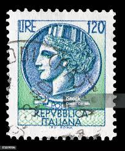 |
| Crunchbase | Demeter Capital - Crunchbase Company Profile & Funding | 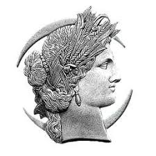 |
| eBay | 634120] Frankreich, 200 Francs, Montesquieu, échantillon, SS+ | eBay | |
| eBay | Greece SC #16 Used 1862 | eBay | |
| vividagallery.com | Italy Turrita Siracusana Forest Green Portrait Definitive Stamp Greeting Card by Vivida Gallery | |
| HipStamp | Italy 677 Italia 1955 | Europe - Italy, General Issue Stamp / HipStamp |